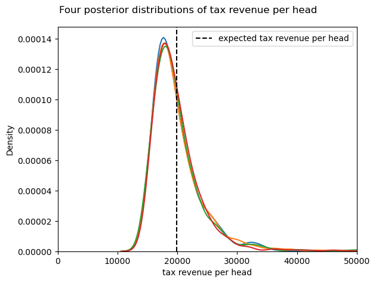

We consider a situation where the government wants to invest in a public good financed by an income tax. The cost of the project is 18k and the question is whether the tax raised by a nonlinear income tax schedule will be enough to cover the cost. We estimate the parameters of the (Pareto) income distribution and then see whether the expected tax income exceeds the cost.
Due to the nonlinearity of the tax scheme, it is hard to propagate the parameter uncertainty into the uncertainty of the tax revenue using a frequentist approach. With a Bayesian analysis this is straightforward to do: we feed the posterior distribution of the parameters into the tax function.
Another advantage of Bayesian analysis is that one can do a scenario analysis, say the cost of the project can be low, average or high with certain probabilities.
We first generate a sample from the theoretical income distribution. With this sample of 50 individuals, we will estimate the parameters of our model.
import numpy as np import pymc as pm from pymc import do, observe N=50 individuals = np.arange(N) with pm.Model(coords={"individuals":individuals}) as model_income: alpha = pm.HalfNormal("alpha",1) m = pm.Normal("m",30000,5000) income = pm.Pareto('income', alpha=alpha, m=m,dims="individuals") true_values = { "alpha": 3.0, "m": 30000 } income_simulate = do(model_income, true_values) with income_simulate: simulate = pm.sample_prior_predictive(samples=1) income_data = simulate.prior.income.values # income_data
Sampling: [income]
Given the income_data that we have, the following code block generates the posterior distribution of the parameters \(\alpha,m\).
model_inference = observe(model_income,\ {"income":income_data[0,0]}) with model_inference: idata = pm.sample(progressbar=False)
Initializing NUTS using jitter+adapt_diag... Multiprocess sampling (4 chains in 4 jobs) NUTS: [alpha, m] Sampling 4 chains for 1_000 tune and 1_000 draw iterations (4_000 + 4_000 draws total) took 1 seconds. There were 3065 divergences after tuning. Increase `target_accept` or reparameterize. The rhat statistic is larger than 1.01 for some parameters. This indicates problems during sampling. See https://arxiv.org/abs/1903.08008 for details The effective sample size per chain is smaller than 100 for some parameters. A higher number is needed for reliable rhat and ess computation. See https://arxiv.org/abs/1903.08008 for details
We can view the estimates and the values for r_hat (which are not great but not so relevant for our application).
import arviz as az headers = ['mean', 'sd', 'hdi_3%', 'hdi_97%',\ 'ess_bulk', 'r_hat'] variables = ["m","alpha"] df_summary = az.summary(idata,var_names=variables)[headers] df_summary
mean sd hdi_3% hdi_97% ess_bulk r_hat
m 29838.667 233.688 29405.822 30072.144 298.0 1.01
alpha 2.731 0.375 2.065 3.498 262.0 1.03
Next we generate our posterior predictive distribution of income.
idata_posterior_predictive = pm.sample_posterior_predictive(idata,model=model_inference,progressbar=False) posterior_predictive_incomes = idata_posterior_predictive.posterior_predictive.income.values
Sampling: [income]
The following code block defines the nonlinear tax function. And we calculate the posterior distribution for the tax revenue.
import pytensor import pytensor.tensor as pt def piecewise_linear_tax_scalar(income, thresholds, rates): """ Calculates the tax for a given income based on a piecewise linear tax function. This function works for inputs of any dimension due to broadcasting. """ t1, t2 = thresholds r1, r2, r3 = rates # Tax for the first bracket tax = np.minimum(income, t1) * r1 # Tax for the second bracket tax += np.maximum(0, np.minimum(income, t2) - t1) * r2 # Tax for the third bracket tax += np.maximum(0, income - t2) * r3 return tax def piecewise_linear_tax(income, thresholds, rates): """ Calculates the tax for a given income based on a piecewise linear tax function. This function works for inputs of any dimension due to broadcasting. """ t1, t2 = thresholds r1, r2, r3 = rates # Tax for the first bracket tax = pt.minimum(income, t1) * r1 # Tax for the second bracket tax += pt.maximum(0, pt.minimum(income, t2) - t1) * r2 # Tax for the third bracket tax += pt.maximum(0, income - t2) * r3 return tax # pt.dtensor3 creates a placeholder for a 3D tensor with double-precision floats. income_tensor_3d = pt.dtensor3('income_3d') # Define the realistic parameters for the Netherlands (2025 system) thresholds = (38441, 76817) rates = (0.3582, 0.3748, 0.4950) tax_due_3d = piecewise_linear_tax(income_tensor_3d, thresholds, rates) calculate_tax_3d = pytensor.function(inputs=[income_tensor_3d], outputs=tax_due_3d) # Use the compiled function to calculate the taxes tax_income_per_head = calculate_tax_3d(posterior_predictive_incomes) tax_income_per_head.shape
| 4 | 1000 | 50 |
In a frequentist approach one can calculate the expected tax revenue. This expectation may (or may not) differ significantly from the target of 18k needed to finance the public good. Whether or not it does, what do we learn from this?
tax_income_per_head.mean(axis=2).mean(), tax_income_per_head.mean(axis=2).std()
| 17824.886616071733 | 3251.493091037539 |
The Bayesian approach allows us to quantify the uncertainty. The following figure shows 4 different distributions of the tax revenue. This figure shows that whether or not the mean tax revenue is above or below 18k is hardly relevant.
import matplotlib.pyplot as plt import seaborn as sns # Assuming your tensor is called 'data_tensor' data = tax_income_per_head.mean(axis=2) # Convert to numpy array if using PyTorch for i in range(4): sns.kdeplot(data[i, :]) plt.axvline(x=tax_income_per_head.mean(), color='black', linestyle='--',label="expected tax revenue per head") # Add vertical line # plt.axvline(x=piecewise_linear_tax_scalar(posterior_predictive_incomes.mean(),thresholds,rates), color='blue', linestyle=':',label="tax of expected income per head") # plt.legend() plt.xlim(0,50000) plt.xlabel("tax revenue per head") plt.suptitle('Four posterior distributions of tax revenue per head') plt.tight_layout();

With the Bayesian approach we can answer the question: how likely is it that tax revenue falls below the 18k threshold:
threshold = 18000 print(data.mean()) print(np.mean(data < threshold))
17824.886616071733 0.635
Also do a scenario analysis with different values for the threshold?